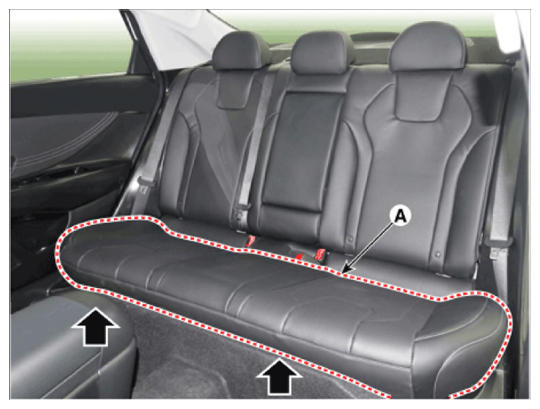
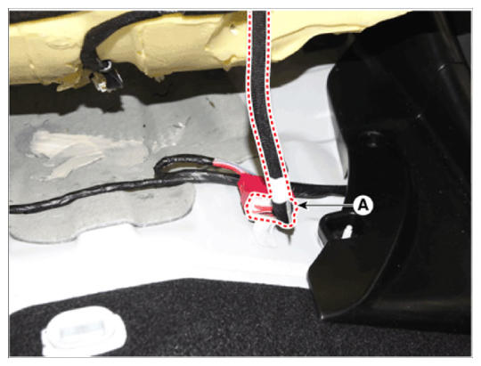

LEMON Manuals
: Even more car manuals for everyone: 1960-2025
Home
>>
Hyundai
>>
2022
>>
Elantra N Line, Standard Trans
>>
Repair and Diagnosis (Single Page)
>>
Accessories & Equipment
>>
Seats
>>
Rear Seat Assembly (Except HEV)
>>
Rear Seat Assembly
>>
Repair Procedures
>>
Replacement
>>
Rear Seat Cushion Assembly
Rear Seat Cushion Assembly
Loosen the mounting bolts, remove the rear seat cushion assembly (A).

Courtesy of HYUNDAI MOTOR AMERICA
Disconnect the rear seat cushion connector (A).

Courtesy of HYUNDAI MOTOR AMERICA
To install, reverse the removal procedure.
Information
Replace any damaged clips (or pin - type retainers).